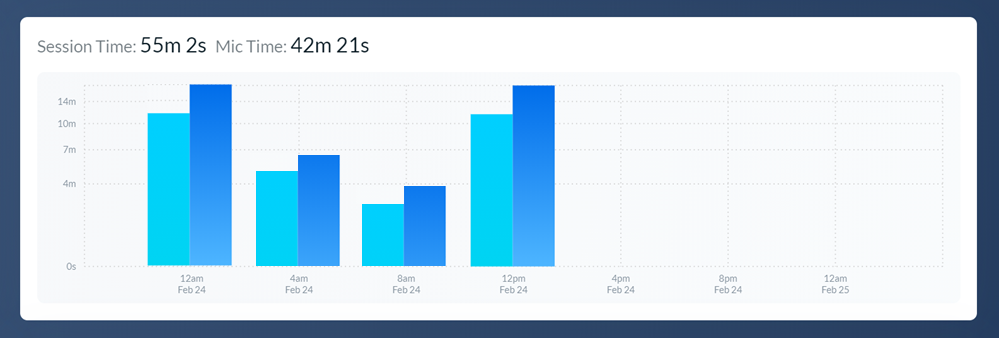
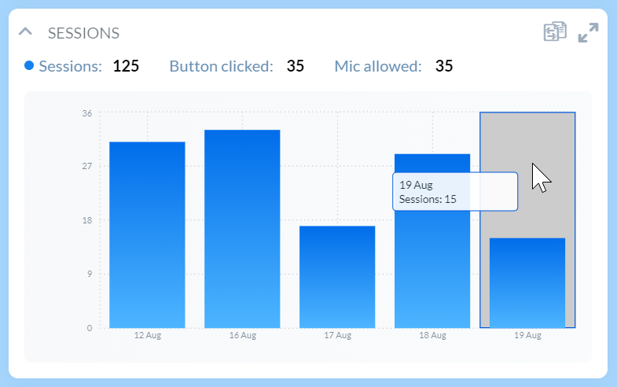
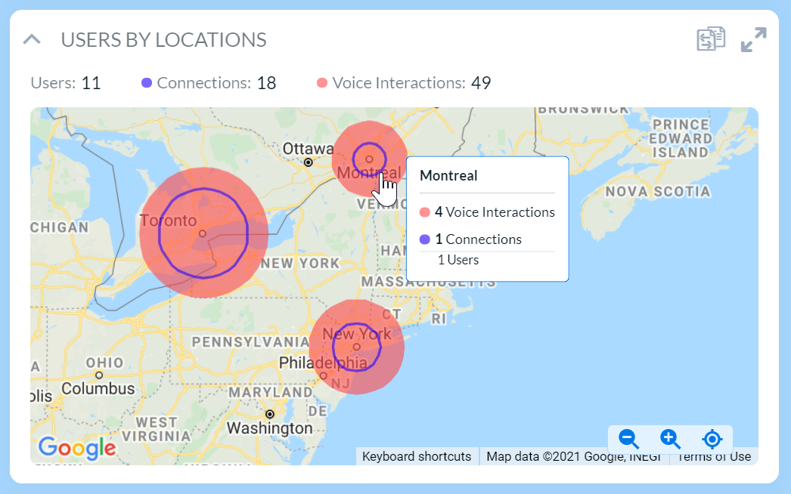
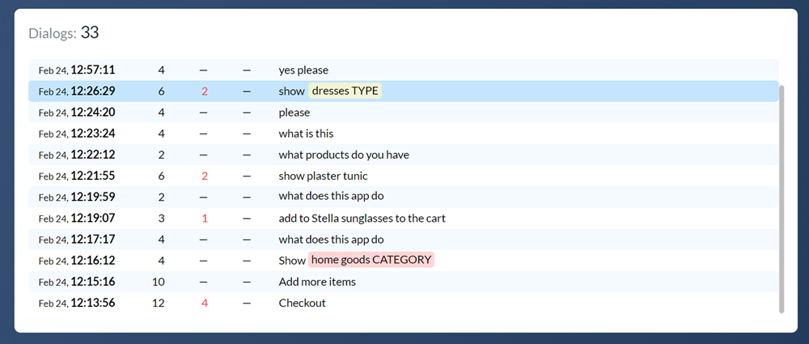
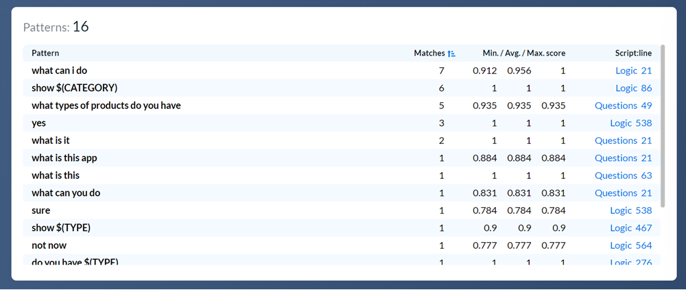

Voice analytics¶
Alan collects statistics on how users interact with the assistant in your app through voice. Using this information, you can analyze key points of conversational data to:
Understand users’ behavior and flows
Identify unhandled requests and find shortcuts to let users get faster with the voice
Optimize the voice assistant effectiveness
Voice analytics is presented in two views in Alan Studio:
Working with the projects dashboard¶
When you log in to Alan Studio, you can see a dashboard with all projects that you have on your account. The project widgets provide high-level statistics on voice interactions.
To view and filter data, you can use the following options:
To switch between environments, click the Dev, Test or Prod tab in the widget.
To switch between views, in the left part of the chart, select the necessary view: Interactions & Recognized, Session & Mic Time, Users & Sessions or User Cities. You can also click carousel controls under the chart.
To define the reporting period, in the right part of the chart, select the necessary time span: 1 Day, 2 Days, 1 Week or 1 Month.
Working with the Analytics view¶
The Analytics view for your voice project displays aggregated voice statistics and anonymized speech to text logs of users’ utterances. Here, you can see what your target audience is, how your users behave and what they say keeping their privacy in mind.
To open the Analytics view:
In Alan Studio, open the project for which you want to view voice analytics.
At the top of the code editor, click Analytics.
To work with data, you can use the following options:
To switch between environments, at the top of the Analytics view, click the environment button and select the necessary environment: Development, Testing or Production.
To select the reporting period, from the Analytics period list, select the necessary time span: Daily, Weekly or Monthly. Then use the timeline to the right to select the necessary day, week or month.
To display the latest voice data in widgets, click Refresh Data.
Analytics widgets¶
The Analytics view presents the following widgets:
Interactions and Recognized¶
This widget displays the total number of users’ utterances vs. utterances that Alan was able to recognize and match. Hover over the bar in the chart to see the exact number of utterances for a specific period.

Session and Mic Time¶
This widget displays the total session time vs. the amount of time for which the microphone was active. Hover over the bar in the chart to see the session duration for a specific period.
Users and Sessions¶
This widget displays the total number of unique users and users’ sessions. Hover over the bar in the chart to see the exact number of sessions for a specific period.
Users by Location¶
This widget displays users’ geographic locations. Hover over a circle on the map to learn about the actual number of users, voice interactions and connections to the voice assistant in a specific location.
Users with Dialogs¶
This widget displays the number of users interacting with the voice assistant in the app and detailed statistics for these users, including:
Platform from which the user joined
Time of the latest connection
User’s location
Number of dialogs
Recognized, unrecognized interactions and errors in dialogs
Latest request to the voice assistant
Dialogs¶
This widget displays the dialogs that users had with the voice assistant. To show all dialogs for a specific user, in the Users with dialogs widget, select the user line.
Pattern Flow¶
This widget visually displays how the conversation with users flows: where they start, continue and finish the dialog with the voice assistant. It helps you analyze the sequence of users’ activities – user events and matched patterns and understand users’ behavior to design a successful voice experience.
The widget illustrates users’ activities as slices laid out around the circle. To read the widget data, do the following:
To see when an event occurred or a pattern was matched in the dialog, hover over its slice in the circle. Alan will display the previous and next activity in the conversation flow.
To get the exact number of event occurrences or pattern matches, hover over the slice and notice the number in the box in the top left corner of the widget.
To get information about the number of users following a specific activity sequence, hover over the arrow between slices. The arrow width indicates the flow frequency: the more often the sequence was followed, the wider the arrow is.
To filter data in the widget by dialog or pattern, in the Dialogs or Pattern widget, select the necessary line.
Patterns¶
This widget displays all patterns of the voice commands that users gave, the number of matches and the match scores. Click the script name or line number to the right to go to the necessary script or block code in the code editor.
Interactions¶
This widget displays the list of all users’ interactions.
The Interactions widget may be a great source of information as it displays the transcript for all dialogs with all users. To get the required data slice, you can filter data in the following way:
To filter unrecognized, input or output interactions, use the filter options at the top of the widget.
To filter interactions by dialog or pattern, in the Dialogs or Pattern widget, select the necessary line.
To filter interactions by entities in users’ utterances, for example, by number, location or an item, in the interactions list, click the filter icon next to the necessary entity.